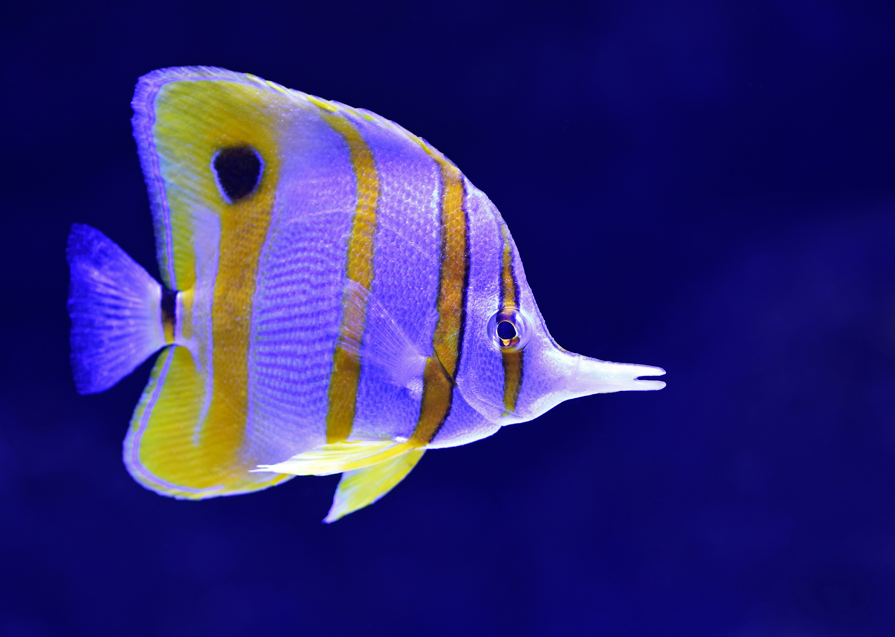
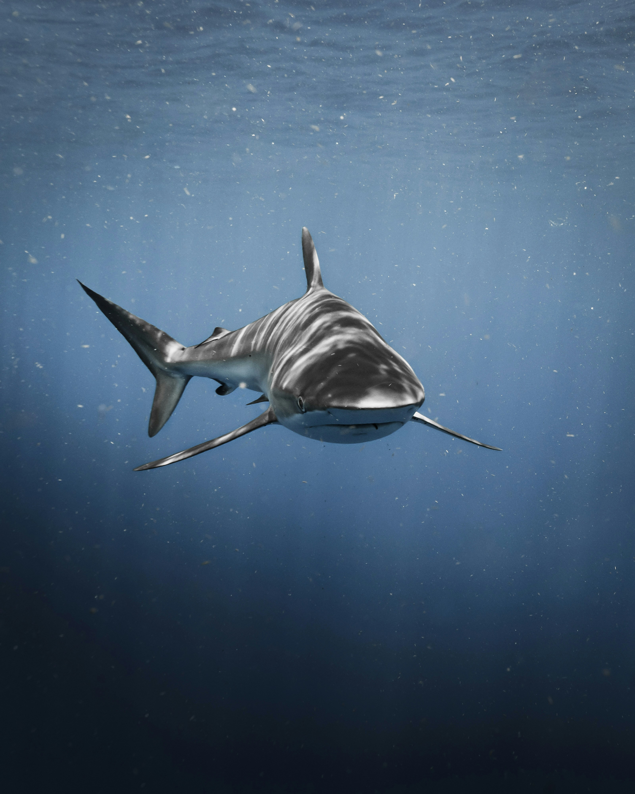

Enthusiast
The Busy, Fun-Loving Type: Spontaneous, Versatile, Distractible, and Scattered.

Perfectionist
The Rational, Idealistic Type: Principled, Purposeful, Self-Controlled, and Perfectionistic.

Helper
The Caring, Interpersonal Type: Demonstrative, Generous, People-Pleasing, and Possessive
Achiever
The Success-Oriented, Pragmatic Type: Adaptive, Excelling, Driven, and Image-Conscious.
Individualist
The Sensitive, Withdrawn Type: Expressive, Dramatic, Self-Absorbed, and Temperamental.

Investigator
The Intense, Cerebral Type: Perceptive, Innovative, Secretive, and Isolated.

Loyalist
The Committed, Security-Oriented Type: Engaging, Responsible, Anxious, and Suspicious.

Challenger
The Powerful, Dominating Type: Self-Confident, Decisive, Willful, and Confrontational.
Peacemaker
The Easygoing, Self-Effacing Type: Receptive, Reassuring, Agreeable, and Complacent.